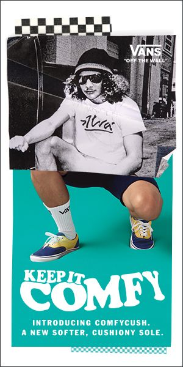
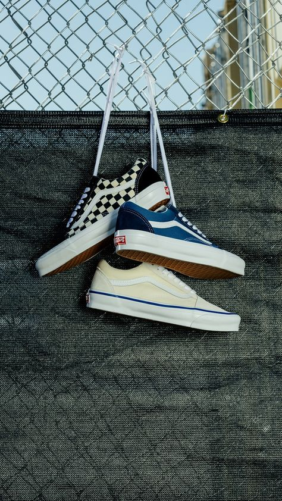

History of Vans Sneaker
Originating in 1966, the Van Doren Rubber Company, now known as Vans, was born from humble beginnings in Anaheim, Calif. Brothers Paul and James Van Doren were interested in providing footwear directly to California customers without wholesaling to retailers. Their East Broadway business captivated consumers and cut through the need of a middleman by producing shoes on the spot for those in need of footwear. It is said that on their first day of business, the brothers sold shoes from scratch to 12 customers who all had their pairs ready for pickup that same afternoon.
Relying on simple construction, namely a canvas upper and waffle sole, the Van Doren brothers made waves early on by introducing the #44 Deck Shoe, a low profile silhouette that soon attracted the attention of local skateboarders. Through the 1960s and into the 1970s, the brand would expand their offerings of silhouettes, designing marquee models of various cuts and shapes. At the time, Vans offerings relied on numeric notation much like that early #44. By 1976, the minds of Tony Alva and Stacy Peralta had created an updated version of the #44. This pair was backed by a padded ankle collar and is now known as the Era. Quickly, Vans expanded its offerings through signature branding, namely the jazz stripe and Off the Wall logo.
